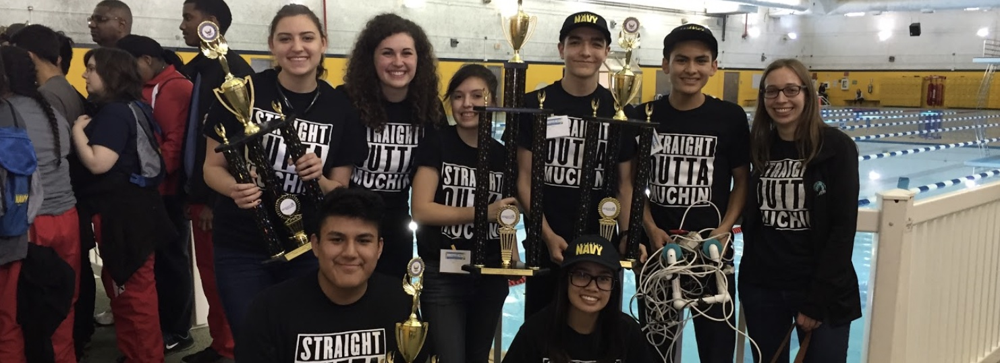
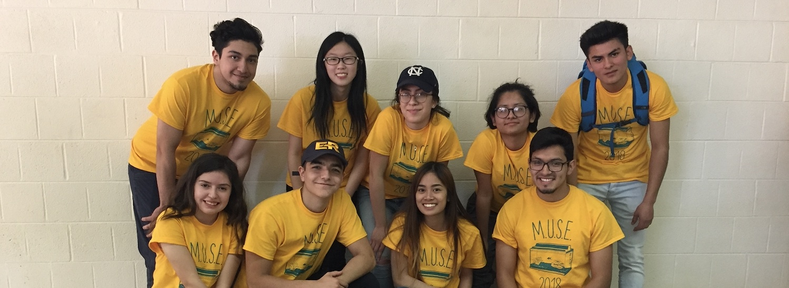

High School Robotics.
From my sophomore to senior year at Muchin College Prep High School, I participated in the Robotics Club. The Robotics Club focused on underwater robotics competitions. As one of the founding members of the club, I held the position of Project Manager in which my responsibilities were to create the required documentations, provide tasks to other team members, and ensure we were prepared for competitions.
Competitions

SeaPerch Competition, 2016
- Received 1st place for overall high school
- Managed a team of 7
- Attended the national competition at Louisiana State University

Marine Advanced Technology Education Competitions, 2017-2018
- Expanded the team to 19 students
- Placed top 5 in the 2018 regional competition
Documentations
Technical Documentation
The M.U.S.E. team's technical documentation entails the process of creating our underwater robot. It specifies the safety measures we took and safety features of our remotely operated vehicle (ROV), the design process, budget and project costing, the system interconnection diagram, and challenges we faced.
Poster Presentation
The competition requires the team to create a poster that encases how we addressed the challenge of the competition, the design rationale of our ROV, and an assessment of the marketing of our ROV.